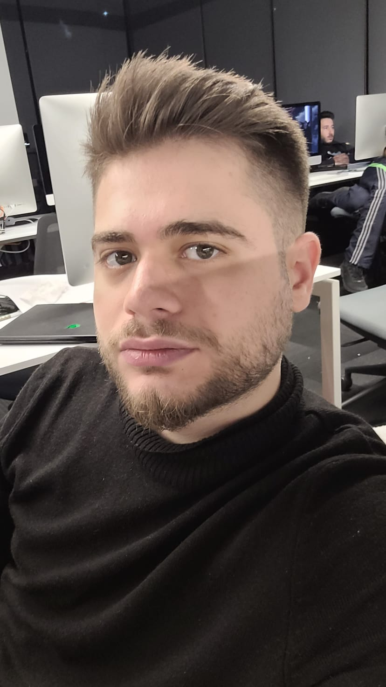

Can Kırkgöz
Frontend Developer & Doctor Who Hayranı
Merhaba!
Ben Can Kırkgöz. Ankara'da yaşayan bir Flutter Developer'ım. Mobil uygulama geliştirmeye olan ilgim, matematik altyapımla birleşince kullanıcı dostu, işlevsel ve yaratıcı uygulamalar geliştirmeye odaklandım. Aynı zamanda yazılım dünyasındaki yenilikleri takip ederek sürekli öğrenmeye ve gelişmeye çalışıyorum.
Doctor Who evrenine olan hayranlığım, sadece izleyici olmakla kalmadı; bu sevgiyi yazılımla buluşturmak istedim. Bu site, hem yazılım becerilerimi sergilediğim hem de sevdiğim evrene saygı duruşu niteliğinde bir proje oldu.
Yeteneklerim
- Flutter & Dart
- Firebase, REST API, Provider
- Kotlin & Android Studio
- MVVM Mimari & Clean Architecture
- UI/UX Tasarımı & Mobil Deneyim
"Sonunda hepimiz birer hikâyeyiz. Sadece güzel bir hikâye olsun, olur mu?"